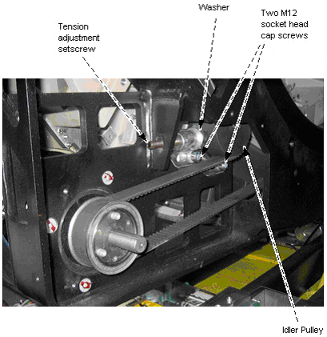

Proprietary to General Electric
Direction 5307452-8EN, Rev# 4
Discovery CT750 HD Service Methods - Adv
Proprietary to General Electric |
| Last Revision | 19 July 2008 |
Verify that you can move the washer by hand (see Illustration 1).
If you cannot move the washer, the belt is too tight.
If the washer is completely loose, the belt is too loose.
If necessary, adjust the belt tension following the instructions in CT Belt Tension Check & Adjustment in the Align, Setup, and Cals section of the Service Manual.
Illustration 1: Axial Belt
